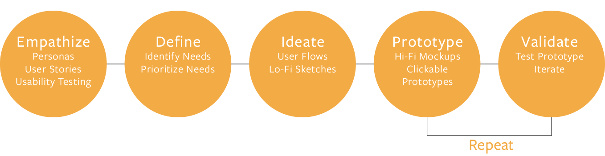
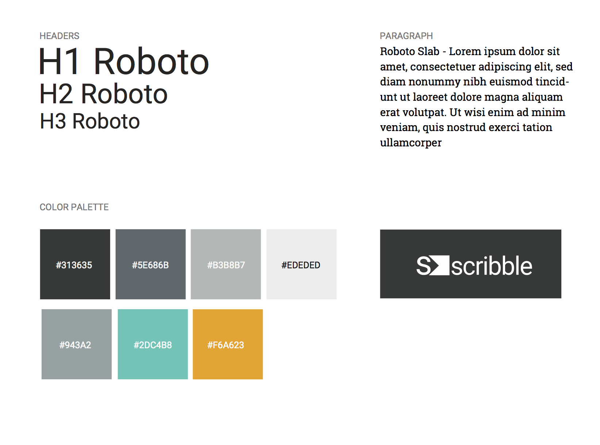
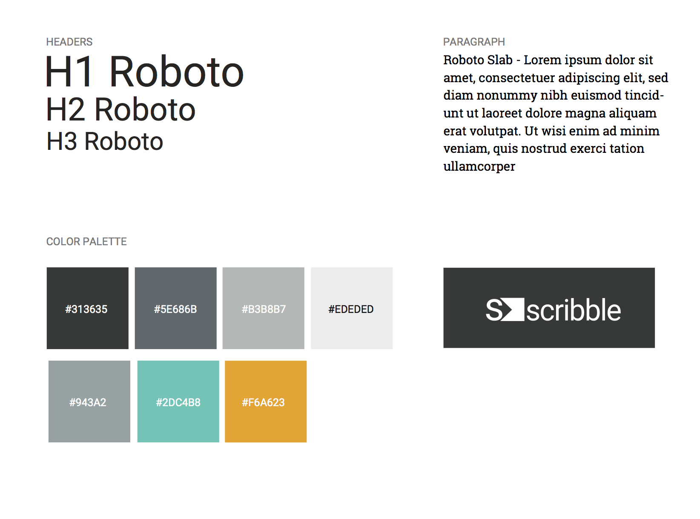

Made to help busy people keep up the pace.

My Role: UX/UI Design, Front-End Development
Studies suggest a person has an average of 60 thousand thoughts a day (Bruce Davis, Ph.D.). Thats one thought per second in every waking hour, which means it is impossible to remember every good idea we have, where we placed that article we wanted to read earlier, or which vacation spot had that cute little restaurant we want to visit in 2020. With a few simple clicks, Scribble acts as an extension of the user's brain by helping us place, retrieve, and share information with ease.
I used the Human-Centered Design process to make sure my design decisions were supported by user research and feedback.
With user experience surveys, I learned many people saving content online bookmark items in their browser. With many saved items, this process quickly becomes difficult to manage because there isn't a way to group content or organize the information bookmarked in a person’s browser.
Another critical component I explored was how people liked to take notes. It became clear we needed to enable an easy way for users to jot down information in categories as if they were interacting with their own smartphone or notebook.
Most people use smartphone apps or pen and paper to write notes. Those who use pen and paper reported liking how quick and easy it to "scribble" down information. Saving, creating and sharing information, with quick accessiblity became a clear need.
After reviewing Scribble's competitors, I determined that rebranding Blocbox to Scribble was necessary as all competitors strive to portray how easy their platform is to use. Scribble’s name came about to reflect that ease of use. It’s easy to 'scribble' down a note or an idea and save it for later refinement. Scribble is meant to enable that same freedom with added organization so that a user's saved items are always readily accessible.
Developing user personas revealed most people need help organizing their daily content at work and at home. People also shared frustration about current practices that didn't allow them to share and view content from all devices easily. As a result moving locations and sharing information with others seemed like it was wasting time.
I discovered what potential users wanted to be able to accomplish user Scribble by developing user stories. Once the stories were analyzed, it became clear the giving users the option to sign up through social media was necessary in order to draw more people in. Creating pages for users to upload links, images, notes and boxes were highly desired. From there, I wanted to enable clients to favorite items, add tags, and share items which was all incorporated into the user navigation.
After determining user needs, the largest challenge was developing an interface that was simple and easy to use while maintaining the look of something fun yet sophisticated. In order to achieve these goals, I chose a readable sarif and san-serif font differentiating my titles and paragraphs. I also chose cool grays which portray sophistication. With that, I added a bright blue to add air to the pages and a pop of orange in order to add electric energy to the overal design.
I chose a horizontal navigation system with the help of user efficiency testing and likability. The orange buttons proved to stand out on the page and drew people in to complete intended tasks. This significantly increased user success during testing.
Organization and user flow of the site was heavily influenced by several wireframe itterations and clickable models that I tested and revised throughout the process leading to Scribble's simple design.
 


Creating this site from the bottom up was a great learning experience. Being that this is the first website I have created, I am proud of the result. I was able to create solutions for navigational inefficiencies quickly and effectively using the design process bloc taught me.
Although tools in the final design are still limited, it created lots of excitement among potential users. Revising this application, I’d create a way for users to search information using key words. I’d also spend more time styling content and incorporating more opportunities for users to edit their space.
Although this project was a success, I still have a lot more to learn. I will take the process I underwent for designing this website and apply it to future designs as I continue to build.